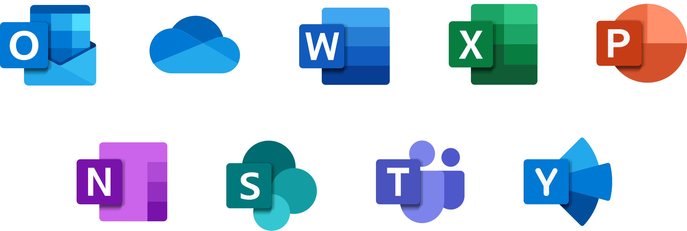
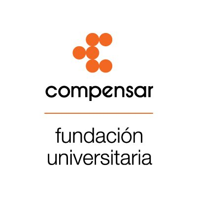

Andrea Rodríguez
Especialista en marketing, mercadeo y análisis de datos
Ayudo a empresas a analizar, visualizar y potenciar sus marcas
Perfil
Negociación| Business Intelligence| Comunicación asertiva|Gestión de proyectos| Metodologías agiles| Herramientas ofimáticas|Pensamiento crítico|Resolución de problemas| Storytelling Gestión de Recursos| Trabajo colaborativo|Evaluación y selección de proveedores| Servicio de atención al cliente| Gestión de relaciones con clientes (CRM)| Análisis de política|Retención y Atracción de talentos.
Experta en Mercadeo con más de 15 años de experiencia en la gestión de cuentas corporativas, aplicando análisis de datos e indicadores para la toma de decisiones y la obtención de resultados. He desarrollado e implementado proyectos innovadores y creativos, contribuyendo al logro de objetivos y liderando cambios estratégicos para la mejora continua. Mi enfoque se centra en la búsqueda y aplicación de estrategias de comunicación efectivas y en el desarrollo de equipos mediante la implementación de capacitaciones.
Habilidades Técnicas
Mis proyectos laborales y personales son diversos y varían según los objetivos establecidos. En Cruz Verde, participé en la creación de una amplia gama de herramientas para los proyectos utilizando las aplicaciones de Office 365. Algunos ejemplos incluyen Power Virtual Agent, SharePoint, Forms, One Note, Planner, OneDrive, chat bots personalizados en Teams, Project, Publisher, Stream, y Visio para el mapeo de procesos. También realicé la automatización de procesos en Power Automate y utilicé Excel, PowerPoint y Word.
Para la presentación y visualización de los resultados obtenidos del correcto tratamiento de los datos, utilicé tableros de control con Power BI y Looker Studio.

🏆 Estrategias de ventas, mercadeo tradicional y digital, ATL y BTL, SEO y SEM.
🏆 Investigación de mercados y estudios de competencia.
🏆 Gestión comercial, CRM, servicio educativo y manejo de equipos e indicadores.
🏆 Habilidades de liderazgo, comunicación, servicio, resolución de problemas y toma de decisiones.
Portafolio
La sinergia entre el trabajo y la pasión experimenta una metamorfosis única: cada esfuerzo reverbera con dedicación, los desafíos se transmutan en oportunidades, y cada día se revela como una página inédita en el libro de tu propósito. En este universo donde la pasión se convierte en propósito, el trabajo no es simplemente una tarea, sino una forma de arte. Te extiendo una cordial invitación a explorar mi portafolio, donde cada proyecto es una manifestación de esta conexión profunda entre la labor diaria y la chispa creativa que lo impulsa.


Análisis en Profundidad
En mi ultima posición laboral, he trabajado en proyectos orientados al ahorro y la mejora continua de los procesos.
✅ La implementación de nuestra aplicación One App en un periodo de 4 meses para más de 700 sucursales representa un hito significativo en la optimización de la productividad empresarial. Nuestra solución digital, diseñada para la gestión de sucursales, destaca por su efectividad y facilidad de uso.
En tan solo unas semanas, esta aplicación revolucionaria simplifica la comunicación, coordinación, supervisión y soporte de tus sucursales. El objetivo principal es potenciar la ejecución de la estrategia comercial, garantizando al mismo tiempo una operación más eficiente. Este proceso de implementación no solo representa un cambio tecnológico, sino una transformación integral en la forma en que tu empresa aborda la gestión de sucursales.
✅ Desarrollé dos proyectos significativos. El primero consistió en medir eficazmente la productividad de todas las unidades de negocio, tanto en retail como en dispensación. Este proyecto implicó la recolección de información de diversas áreas, la limpieza de datos (como ausentismos, horas extra, recargos nocturnos, planta activa, planta faltante) y la correcta agrupación de las bases para visualizar los resultados. Dada la gran cantidad de información, tuve que aplicar técnicas de big data.
✅ La creación de una página web y un chatbot como asistente personal, principalmente para los auxiliares de droguería, pero también útil para cualquier colaborador que decidiera utilizarlo. Este asistente personal estaba seccionado con los temas que generaban más dudas en las diferentes áreas, generamos un sistema LMS. Cuando el asistente no tenía la respuesta, dirigía a la persona al experto correspondiente. Además, el chat indicaba al auxiliar qué campaña de ventas se estaba implementando en el día y le recomendaba, según su cédula de usuario, qué productos podría ofrecer para aumentar las ventas. Este proyecto permitió la integración de diferentes áreas que estaban aisladas, definir personas de cada área para que pudieran estar al tanto de la información y establecer reuniones periódicas entre todos para una mejora continua.
Certificaciones y Educación
Mi trayectoria educativa se compone de:
🥇 GRADO MÁSTER EN MARKETING FARMACÉTICO (Universidad Nebrija).
🏅 GRADO PROFESIONAL DE MERCADEO Y PUBLICIDAD (Fundación Universitaria Compensar).
🏅 GRADO DIPLOMADO DESARROLLO DE CAMPAÑAS EN MARKETING DIGITAL (Fundación Universitaria Compensar).
Testimonios
Jason Martinez
Supplier Services Coordinator
“Andrea es bastante hábil trabajando con personas, su inteligencia e integridad son realmente destacables.”
Contacto
Si tienes alguna pregunta, sugerencia o simplemente quieres ponerte en contacto conmigo, no dudes en hacerlo. Aquí te dejo algunas formas de contactarme:
Puedes enviarme un correo a marod723@gmail.com intentaré responder lo más pronto posible..
/martha-andrea-rodriguez-504b71256/